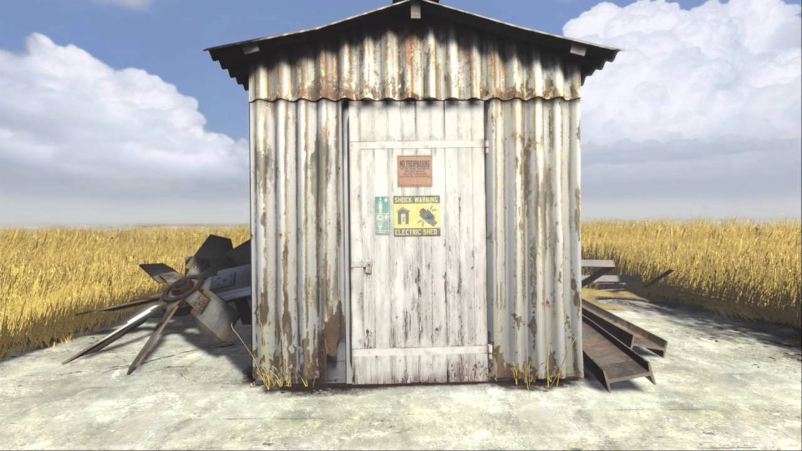
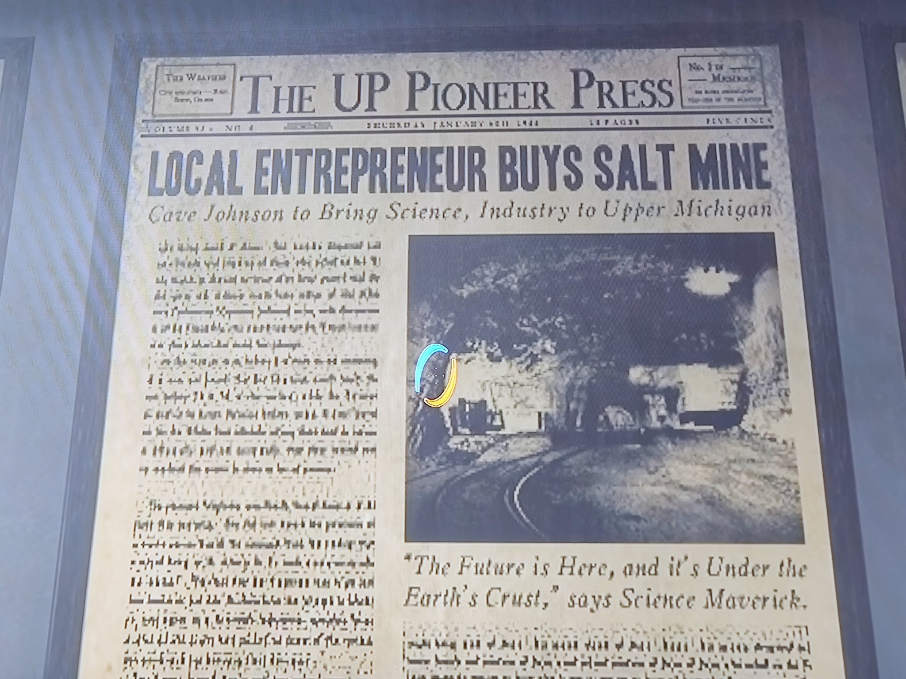

Onde Estamos

Nós, da Aperture Science, estamos localizados na Península Superior do
Estado de Michigan, nos Estados Unidos da América. É lá onde todos os
nossos testes e nossa administração é realizada, e é onde VOCÊ vai
quando chegar a sua hora de nos
Os laboratórios da Aperture Science estão localizados dentro de uma grande mina de sal, onde todos os nossos testes são realizados com total discreção do mundo externo, além de nos dar total liberdade para
Bata 3 vezes na porta e responda a pergunta "O que fazer quando a
vida te dá limões?" com "Não faça limonada! Devolva os limões para a
vida, e derrube a casa da vida usando seus próprios limões!". Com
isso, você pode entrar na Aperture Science de maneira segura e
cautelosa, sem se preoucupar com forças externas (FBI, OSHA, ATF,
etc.).
ajudar a revolucionar o campo de ciências aplicadas. E quem sabe
finalmente ganhar o prêmio de melhor empresa de ciências aplicadas do
ano, ao invés dos juízes derem para a Black Mesa novamente, mesmo eles
não fazendo nada mais inovador que uma pilha usando batatas. E eu tenho
quase certeza que eles começaram a roubar nossa tecnologia. Acredita
nisso? Provavelmente vou ter que demitir cada um dos meus cientistas
para ter certeza que esse prédio não seja contaminado com o cheiro
horrível que emana de qualquer um que entre em contato com a Black Mesa.
Me dá repulsão, sinceramente. Mas não é isso que nós viemos falar sobre,
não é? E sim da grande Aperture Science, e onde ela está! Os laboratórios da Aperture Science estão localizados dentro de uma grande mina de sal, onde todos os nossos testes são realizados com total discreção do mundo externo, além de nos dar total liberdade para
Folha de jornal do dia da aquisição da mina de sal por Cave
Johnson.
construir em qualquer direção que nós quisermos! Usamos gigantes esferas
de asbesto para construir nossas pistas de treinamento, pois asbesto é o
que mais usamos na Aperture Science, desde material de construção, até a
realização de testes para conseguir fazer abestos líquido se comportar
como sangue, para finalmente poder dar para alguém a capacidade de ter
seu corpo sendo corrido em apenas asbesto. Onde eu estava mesmo? Ah é! A mina! Então, nossa mina é gigante, sério. Tivemos que fechar alguns pontos dela por causa de experimentos que não tiveram sucesso, como os experimentos dos Homes-Louva-Deus.